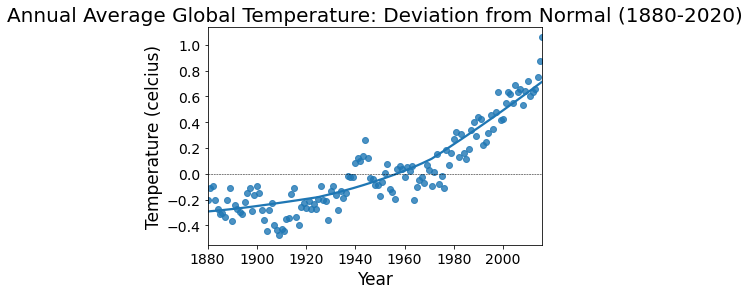
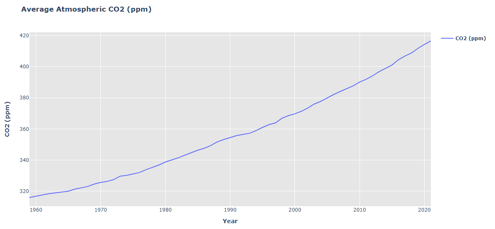

The purpose of this project is to present the
impact of increased carbon dioxide to climate change and water acidity.
With the assembled dataset, PlotLy JavaScript Library was used to plot increase in carbon
dioxide of the past several decades.
The observation reflects an increase in co2 lead to increase in temperature as well as water
acidification.
Increase in Temperature

Increase in Carbon Dioxide Levels:
The amount of CO₂ in the atmosphere has increased more than 20%

Increase in Ocean Acidity:
Since industrialization began in the 18th century, surface-ocean acidity has
increased by 30%.
The warming of seawater also causes chemical changes in phytoplankton that
reduce their ability
to remove CO2 during photosynthesis